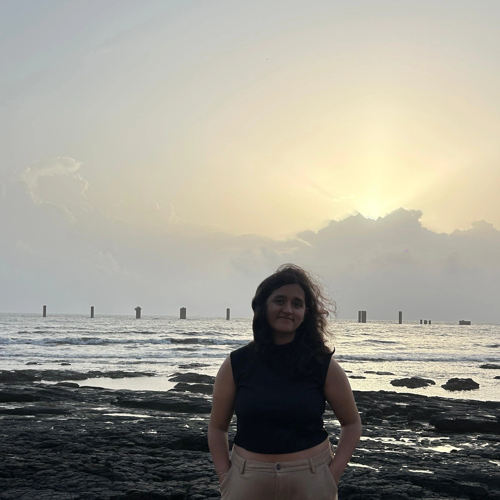

Tanisha Upadhyay

Hey there! My name is Tanisha Upadhyay, and I am a graduate student at International Institute of Information Technology, Hyderabad where I am pursuing Masters in Technology for Computer Science. I also spend four amazing years pursuing my undergraduate degree in Electronics and Communication Engineering from Birla Institute of Technology and Science, Pilani - Hyderabad Campus.
During my undergrad, my research focus was towards biomedical applications of deep learning. I did my undergraduate thesis under Dr. Chittaranjan Hota of the CSIS Department at BITS Hyderabad developing LSTMs for performing anomaly detection on WBAN sensor data. I also pursued research under Dr Rajesh Kumar Tripathy of the EEE Department at BITS Hyderabad to perform voice pathology detection using chirplet transforms.
I am always on lookout for new opportunities pertaining to computer vision in biomedical, particularly speech technology applications. I also find interest in pursiong language tecnologies. If our interests align, I would love to connect! Kindly reach out via linkedin or my email addresses, at upad.tanisha@gmail.com or tanisha.upadhyay@students.iiit.ac.in. Have a great day!